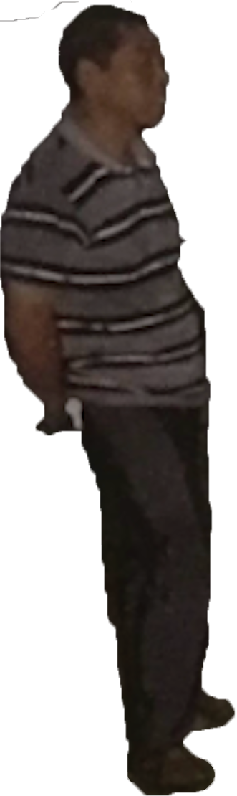
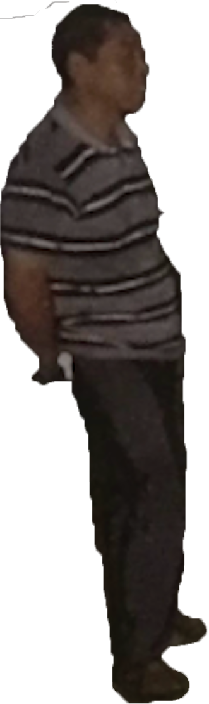

having been stuck in the states since the lockdown in march, 2020, i work on this thesis project about shenzhen with every relevant material i have at hand. the lack of materials requires me to look and work more closely with what i have, and also pushes me to look for alternative ways of thinking and understanding pieces of realities i encountered and collected. there are a lot of things i hope to express through this project, but there are too complicated and elusive for me to address at once. i consider my thesis project as some kind of growing anthology. every piece included in this project needs to be self-sustained on its own, but when everything comes together, i hope they will build a bigger narrative, and show the audience something closer to the intricate and interconnected realities i know in shenzhen.
chapter 1
part 1 the lychees
in the summer of 2018, i interned at shenzhen tv station. running around in the city with two reporters everyday, we covered local stories for the broadcast and the newspaper. one might expect news stories to be always extraordinary and thrilling, but the reality was, most stories presented in the local news were insignificant and boring. for example, a metro security guard returned a suitcase that had 10 thousands rmb cash in it to mr z, who was going back to his hometown after years working as a construction worker in the city. or, a successful female entrepreneur d established her company of shared bikes in 5 years and benefited the local communities. that was how shenzhen felt to me initially--the fastest developing city in the world was always on the go, composed of thousands of insignificant little out-of-sync pieces of realities. i failed to understand anything from these small pieces of lives in the city and was disappointed by the job, but then i came across one story that allowed me to see and understand these seemingly abnormal but irrelevant realities.
the story took place in lychee park in futian district. in early June, the lychee trees in the park started to fruit. the trees had dry and crisp branches and broke easily, and for that reason, picking lychees was formally prohibited by the park. but people at the time were sneaking into the park at night to steal lychees, and many of them were severely injured and hospitalized after their attempts. At the park, we investigated the gigantic lychee trees that people fell from. they were at least three-floors tall and looked bizarre and demonic with their thick and curvy branches. such creatures were somewhat out-of-place for shenzhen, a city where every part was carefully devised.
at the security office of the park, we were presented with a pile of printed phone photos the security guards took of people in action or being caught. among all the low-quality phone photos, one strangely composed photo caught my eyes. made up of low resolution bits, the photo renders a mysterious tableau where three misty figures appear in the dark. a woman in purple floral dress is sitting cross-leg on the ground and looking down at a pile of branches in her arms; a middle-age man in a striped shirt is standing on her left, having his hands clasped behind his back and looking at the woman indifferently; at the heart of the darkness in the far background, a dim little figure is looking at the scene with his arms crossed. What is going on here? if one is told that someone in this scene tried to steal lychees but some terrible things happened to them, then the question becomes only more frustrating. what is missing here? the lychees? The victim? the broken bone? or something else?
part 2 the city
shenzhen is not just a city. it is the city, the chosen one in china and the world in our time. in 1978, two years after the cultural revolution ended, the chinese government under the leadership of deng xiaoping announced an economic reform program, making new policies that focused on a substantially increased role of market mechanisms. only a bridge away from Hong Kong, which at the time was still a colony of the u.k., shenzhen was chosen to be the first special economic zone (sez) in the country in 1980. with the arrival of abundant foreign investors and migrant labor from every place in China, what was originally a fishing village has transformed into a metropolitan city at a shenzhen speed in the past forty years. today’s shenzhen is one of the fastest growing cities in the world, and here, one can see endless skyscrapers covered in glass and plentiful construction sites where more are in the making. a place like this is regarded as an incredible miracle in a postmodern time. to demystify the legend, one would need to meet the people who dedicate their works and lives to the making of this city.
i always hear Shenzhen people say, you are a Shenzhener once you come here. i also see it a lot in propaganda ads at bus and metro stations, a lot of time paired with only photos of smiling construction workers or factory laborers. in today’s shenzhen, over 70% of the population are temporary migrants. besides workers and laborers, one will also meet countless office workers, cs programmers, entrepreneurs, investors, and merchants etc. one will find a lot of people you encounter in shenzhen strangely optimistic and enthusiastic but also anxious and insecure about the future at the same time. shenzhen has been an unexceptional place for experiments and progress, and the first generation Shenzheners were the most audacious people in the country, who came to the city with great dreams and visions. although realities here for individuals vary, and the economic gap between the rich and the poor is large, the city is still a promising one, a fired up place.
i always like to borrow anthropologist anne tsing’s word, precarious--which she uses to describe the postmodern capitalist system in Mushroom at the End of the World--to describe the overall reality in Shenzhen that i observe—precarious as things are not all regulated and therefore high opportunities and risks coexist for individuals. like the people who attempted to steal precious lychees but fell and injured themselves, individuals in this city—who are believed by the system to be rational and independent players—need to take initiatives and navigate their own ways to success. the paths are always perilous, and if one loses the game the price they pay could be costly (evident examples in the city are investing in the stock market and working as workers at construction sites, in both cases a fatal episode could be easily imagined. but still, the award is alluring and the risk components only make the game more exciting. after all, taking risks is a privilege; only those who are free are entitled to do so.
part 3 the missing parts
in the late 1980s, the rise of the market's roles in the economy brought about radical changes to Chinese society. the reintroduction of the market economy model had the country broken off with its socialist past in the economic aspect, leading to a breakdown of established social order and a ground shifting in ideology on a national level. confronted with a new disorienting reality, a new generation of avant-garde chinese writers recognized individuals new predicament in a new era—profound alienation and disempowerment in an increasingly unknowable world, and they looked to magical realism from latin american literature to create their own narratives of a new era. in his short story on the road at eighteen (1986), yu hua tells a series of absurd incidents that the first-person protagonist, an eighteen-year-old, encounters when traveling alone for his first time. suffering nonsensical violence from a self-interested fruit entrepreneur and a group of bullying farmers, the protagonist soon collapses into a victim and his agency as a subject quickly falls to pieces.
the short stories of chinese magical realism helps me understand the complexity of a postmodern chinese society and how it shapes individuals realities. baffling and unpredictable, the open market is too hazardous for individuals who are now granted free will to navigate, and with greedy people and their boundless materialistic desire, the place only becomes ever more precarious. in shenzhen, a place that fully embraces neo-capitalism and globalization, temporary migrants are drifters and self-seekers who face opportunities and risks everyday, but for different classes, the opportunities and risks they face are different.
two years ago, my parents moved to overseas chinese town !oct! one of the most stratified and curious districts in shenzhen. at its heart was baishizhou village, the biggest village in shenzhen and a self-sustaining ecosystem that held over 150 thousand population of migrant workers; above the village was the oct luxurious apartments, which enjoyed beautiful views of the shenzhen bay and the mountains of hong kong across the water; on the right to the village was the famous entertainment park the window of the world, which has about 130 reproductions of some most famous tourist attractions in the world and permeates the district with its explosive show music every night; and below it was the shenzhen bay super headquarter base, which will become an important financial district that would serve the greater bay of guangdong, hong kong, and macau. walking in oct, i always had a peculiar feeling of anachronism, and that feeling was proven right when baishizhou village was demolished last summer following a newly launched urban planning project.
the village would need to go eventually, and the situation that a village was the center of a megacity could only happen when progresses are not in sync and changes come in order. now the village is gone, and the over 150 thousand individuals had to relocate their lives somewhere else. all of a sudden, oct has become too tidy and perfect. the ecosystem has collapsed as the messy but critical parts have vanished. as low densely populated buildings are torn down and new skyscrapers rise from the ground, the city makes sure it presents itself with only glamor and fanciness. the construction workers, the cashiers, the bus drivers, and the office workers, these low-income groups who live the most vulnerable lives compose the most critical population of shenzhen—cheap laborers. now their realities are removed from the landscape and its grand narrative, but isn’t it detrimental to hide and exclude the precarious sides of this city that operates like a perpetual motion machine? Only until I went to Lychee Park and saw those unruly lychee trees, i started to understand what Shenzhen is beyond its grandeur and boring facades. This is a wild world, a city of progress, and here death is a taboo. the lychee forest is one of the rare places where one could sense notions of death in the city.
to be continued...